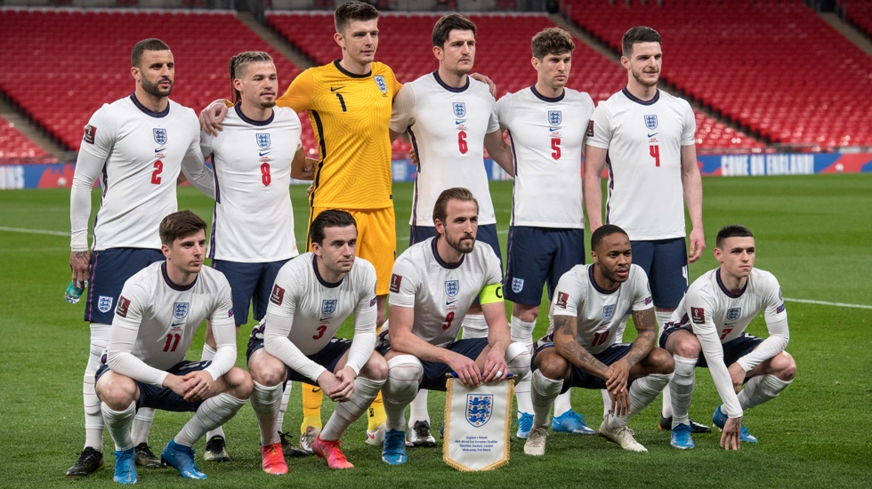

BANDERA |
NOMBRE |
PUNTOS |
 |
INGLATERRA |
1817 |
Inglaterra es considerada una de las naciones más influyentes y respetadas en el mundo del fútbol, no solo por ser el lugar donde nació este deporte moderno, sino también por su rica historia, su prestigiosa liga y su capacidad para producir talentos de clase mundial. El fútbol inglés tiene una profunda tradición que se remonta a finales del siglo XIX, cuando las primeras reglas del fútbol moderno fueron codificadas. Desde entonces, Inglaterra ha jugado un papel crucial en la expansión global del fútbol, convirtiéndose en un referente tanto a nivel de selecciones nacionales como de clubes. A nivel internacional, el mayor logro de Inglaterra fue ganar la Copa del Mundo en 1966, un triunfo histórico que quedó grabado en la memoria de los aficionados ingleses. Aquel equipo, liderado por jugadores icónicos como Bobby Charlton y el capitán Bobby Moore, logró llevar a Inglaterra a la cima del fútbol mundial. Aunque desde entonces no han vuelto a ganar una Copa del Mundo, la selección inglesa ha sido protagonista en múltiples torneos importantes, alcanzando las semifinales en varias ediciones y llegando a la final de la Eurocopa 2020. En los últimos años, bajo la dirección de Gareth Southgate, Inglaterra ha resurgido como una potencia global, con un equipo joven y talentoso que ha demostrado ser capaz de competir al más alto nivel. Uno de los aspectos que destaca a Inglaterra como un país clave en el fútbol mundial es su liga local, la Premier League. Considerada por muchos como la mejor y más competitiva liga del mundo, la Premier League no solo alberga a algunos de los clubes más exitosos, como el Manchester United, el Liverpool, el Chelsea, y el Manchester City, sino que también atrae a jugadores y entrenadores de élite de todo el planeta. La mezcla de velocidad, intensidad y habilidad técnica que caracteriza al fútbol inglés ha convertido a la Premier League en un espectáculo global, seguido por millones de aficionados en todo el mundo. La liga ha sido dominada por clubes como el Manchester United de Sir Alex Ferguson, el Liverpool de Jürgen Klopp y el Manchester City de Pep Guardiola, quienes han dejado una huella imborrable en el fútbol europeo. Inglaterra también se destaca por su capacidad para desarrollar talento futbolístico. A lo largo de las décadas, ha sido cuna de algunos de los jugadores más emblemáticos de la historia, como George Best, David Beckham, Wayne Rooney y, más recientemente, jóvenes estrellas como Harry Kane, Raheem Sterling y Jude Bellingham. Las academias de fútbol en Inglaterra son de las mejores del mundo, con clubes como el Manchester City, el Chelsea y el Liverpool invirtiendo fuertemente en el desarrollo de jugadores jóvenes. Esto ha permitido que Inglaterra mantenga un flujo constante de talento que nutre tanto a la selección nacional como a los principales clubes de la liga.
